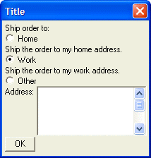
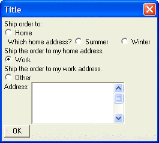

Freeform Radio Button Controls
Sometimes, it is desirable to spread out your radio buttons in different locations on the dialog box. To do this, you use freeform radio button controls. With freeform radio button controls, you have complete freedom as to how the radio buttons are placed on the dialog.
To create a freeform radio button control on a dialog, you use the '(' and ')' delimiters.
The syntax for a freeform radio button object is:
(variable_name:choice) |
Unlike the standard radio button command, in which a single command creates all of the radio buttons for each choice, with freeform radio buttons you have to use the command for each choice. The command can be placed anywhere in the dialog, so you can even have nested freeform radio button controls.
The following script demonstrates the use of freeform radio controls:
Shipto = "Work" result = ui_dlg_box("Title",<<%dlg% Ship order to:; (shipto:Home); Ship the order to my home address.; (shipto:Work); Ship the order to my work address.; (shipto:Other); Address: [%M%.30,5address]; <OK> %dlg%) |
This script creates this dialog:

Lesson 2: Freeform Radio Buttons
Notice that the radio buttons are interspersed among the static text controls. The default value for the radio button group is set with the command: Shipto = "work". (Notice also, the use of the %M% flag in the Address field. This converts the field into a multi-line text box. We discuss these flags in later lessons).
Multiple Freeform Radio Button Groups
All radio buttons that are in the same group have the same variable name. The following script has two freeform radio button groups:
Shipto = "Work" result = ui_dlg_box("Title",<<%dlg% Ship order to:; (shipto:Home); Which home address? (home:Summer) (home:Winter); Ship the order to my home address.; (shipto:Work); Ship the order to my work address.; (shipto:Other); Address: [%M%.30,5address]; <OK> %dlg%) |
This script creates this dialog:

Lesson 2: Multiple Freeform Radio Button Groups
This script has a button group for the "shipto" variable, and another button group for the "home" variable. Only one button in each group can be selected.
 Note : At this point we have not spent any time trying to make the dialogs that we have created look aesthetically pleasing. Don't worry about this now. We will get to this later on.
Note : At this point we have not spent any time trying to make the dialogs that we have created look aesthetically pleasing. Don't worry about this now. We will get to this later on.
In the above dialog, it would be nice if the "Summer" and "Winter" radio buttons were grayed out unless the user had clicked the "Home" radio button. We will learn later on how to make conditional controls.
Next
Limitations
Desktop applications only.